任务二 MySQL的安装与配置
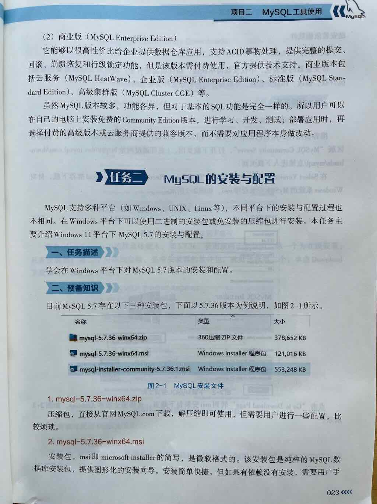
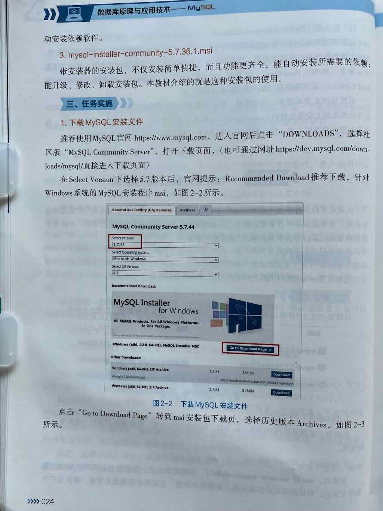
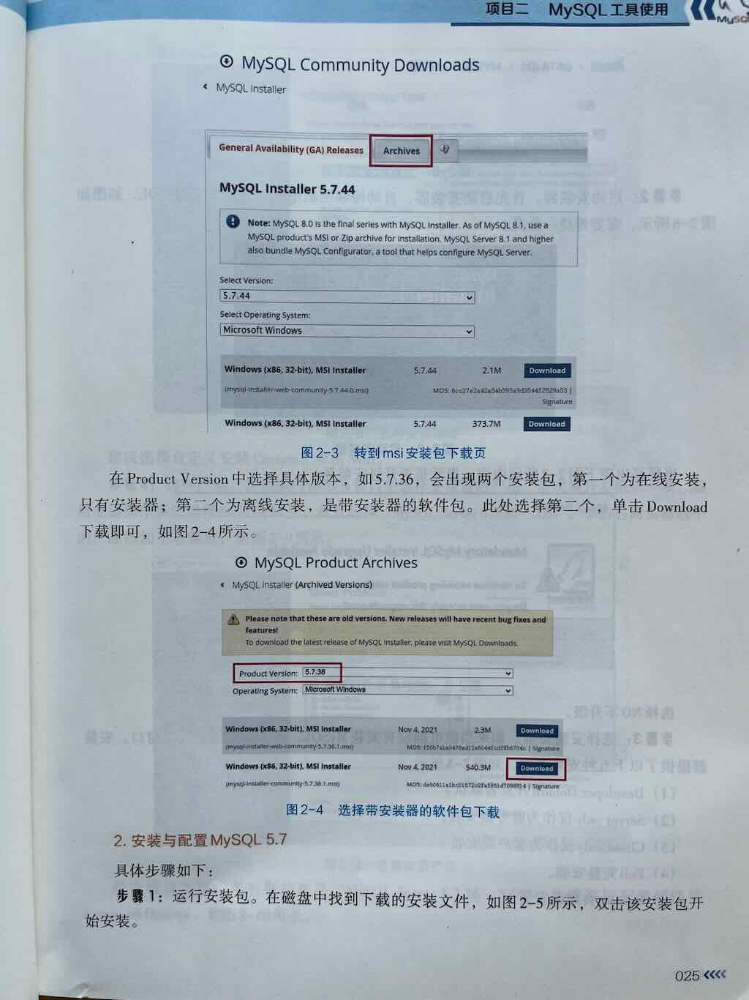
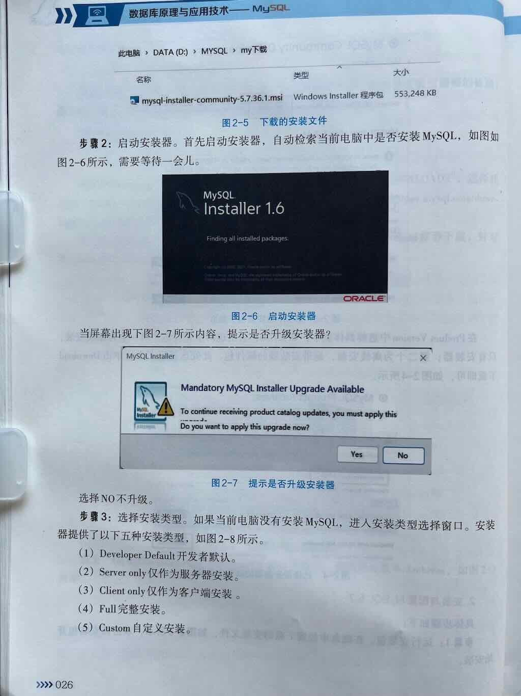
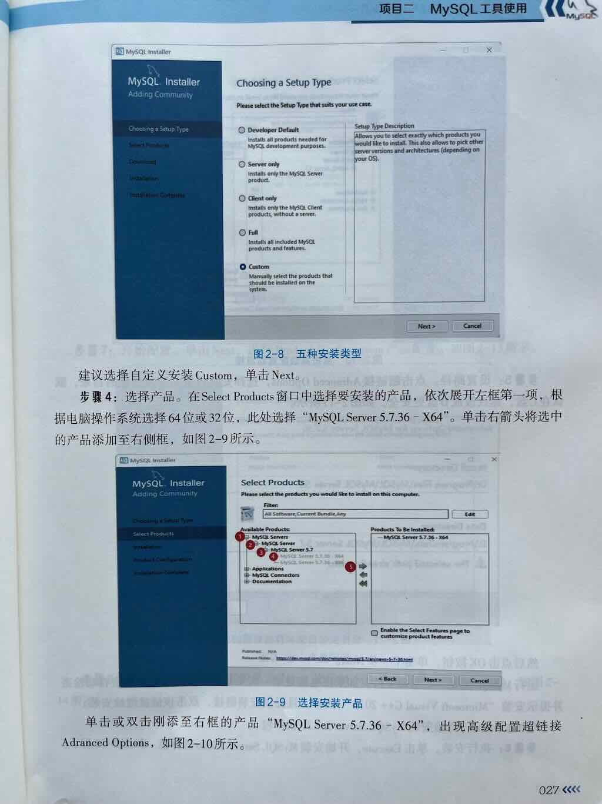
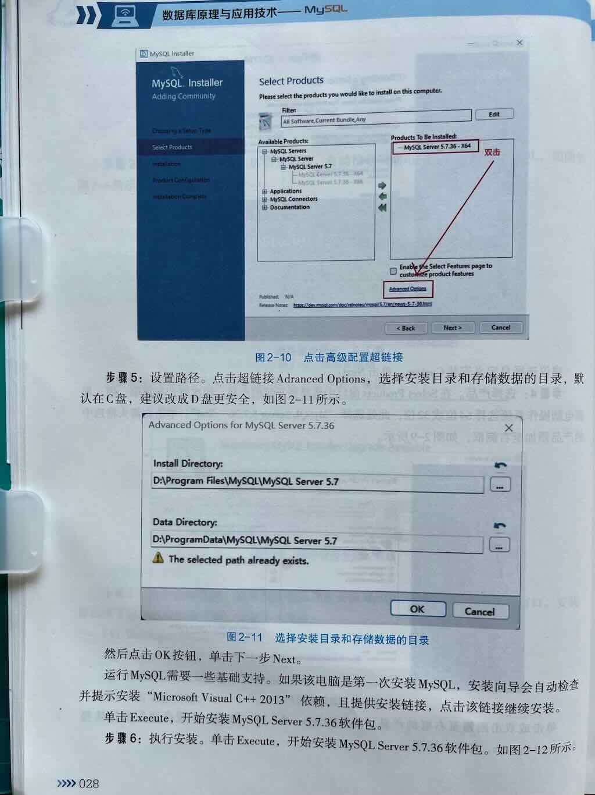
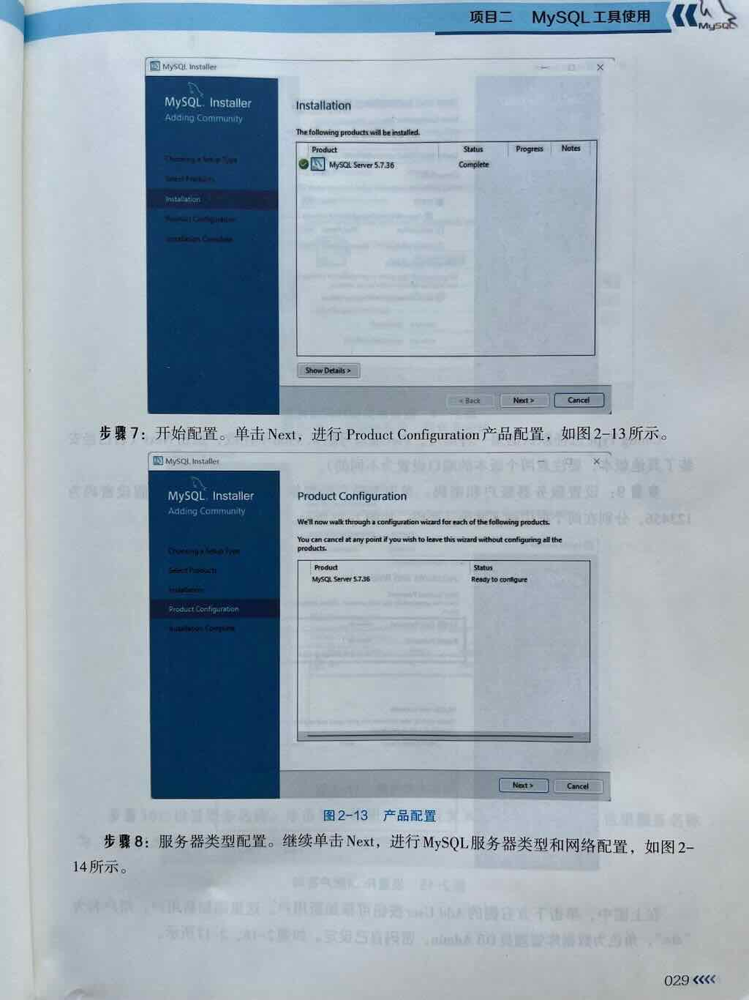
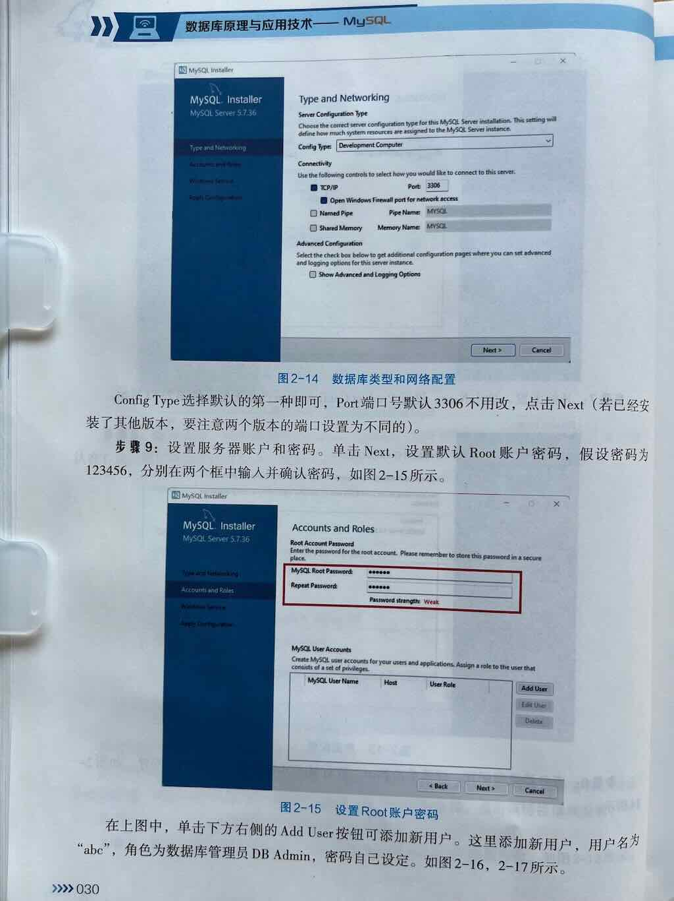
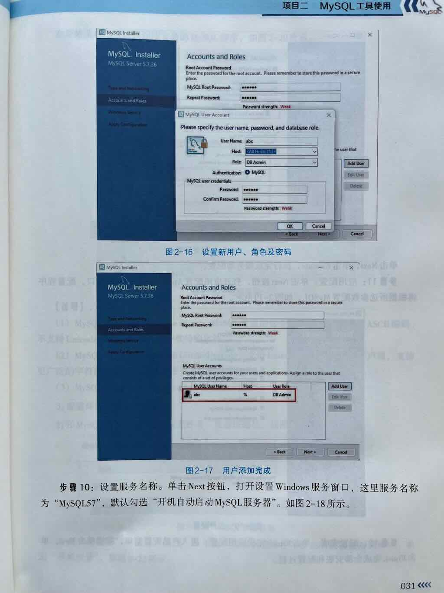
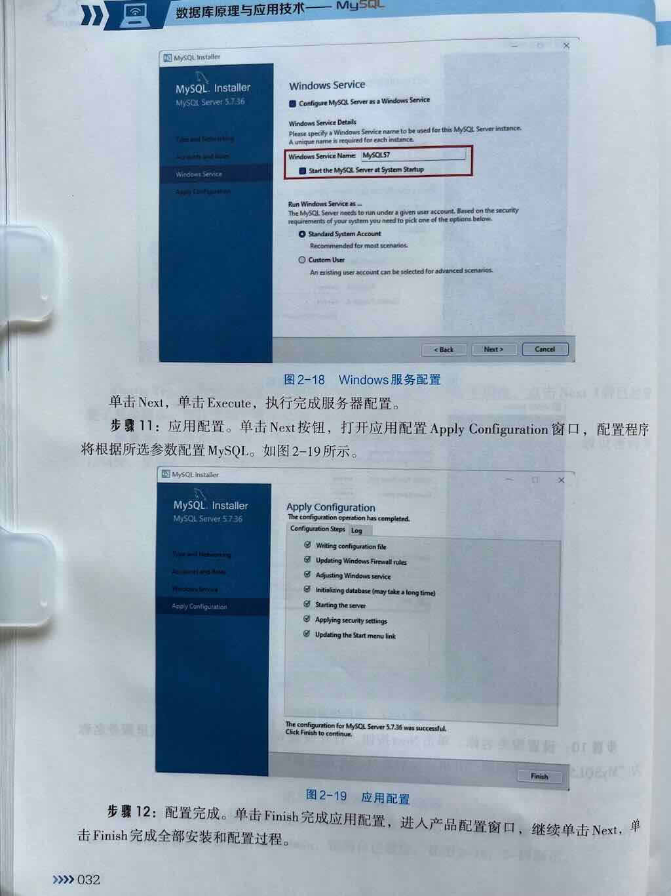
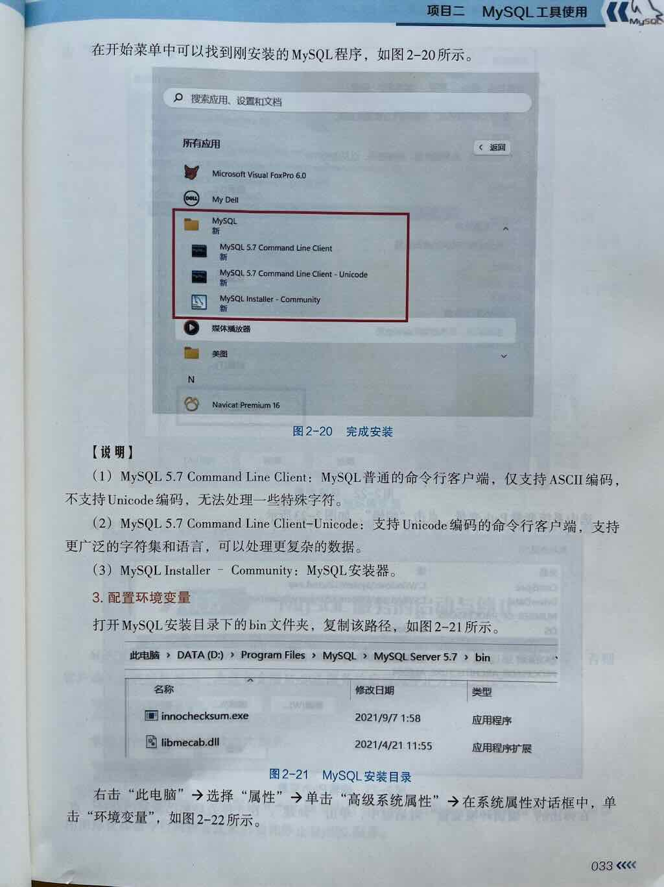
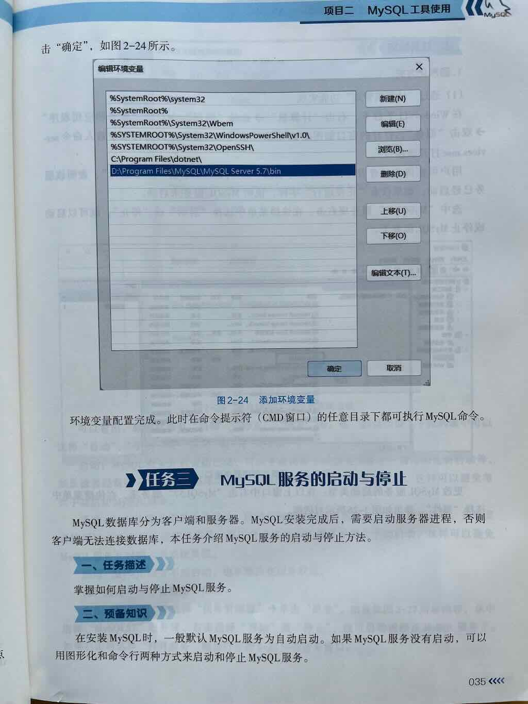
简答题¶
- MySQL三种安装包的区别是什么
- 简述安装MySQL的过程
- 在安装MySQL的过程中，主要需要进行哪些配置？
- 如何配置MySQL环境变量
- 安装成功后，开始菜单下MySQL的三个工具的用途是什么
MySQL三种安装包的区别是什么¶
mysql-5.7.36-winx64.zip
mysql-5.7.36-winx64.msi
mysql-installer-community-5.7.36.1.msi
简述MySQL的安装与配置过程¶
-
下载安装包
- 访问 MySQL官网下载页面。
- 选择 MySQL Installer for Windows（推荐下载完整版）。
-
运行安装向导
- 选择安装类型：
- Developer Default（开发默认，包含常用工具）。
- Server only（仅安装MySQL服务器）。
- 按提示完成安装，记住设置的root用户密码。
- 选择安装类型：
-
配置环境变量（可选）
- 将MySQL的
bin目录（如C:\Program Files\MySQL\MySQL Server 8.0\bin）添加到系统PATH。
- 将MySQL的
在安装MySQL的过程中，主要需要进行哪些配置？¶
如何配置MySQL环境变量¶
安装成功后，开始菜单下MySQL的三个工具的用途是什么¶
补充知识：MySQL客户端管理工具有哪些¶
- MySQL客户端（官方命令行管理工具）
- CMD：windows7命令行工具
- PowerSheel：windows10命令行工具
- MySQL Workbench（官方界面管理工具）
补充知识：如何打开命令行窗口
- 方式1：通过"运行"对话框打开
- Win + R > 输入cmd > 回车
- 方式2：通过“开始”菜单打开
- 右键单击开始菜单
- 找到“命令行工具”
- 方式3：通过“目标文件夹” 打开(推荐)
- 进入目标文件夹
- 按住Shift + 右键单击窗口空白处
- 选择“在此处打开命令行工具”
补充知识：Command-Line Client是什么
- 是MySQL官方的命令行工具。
- 是MySQL官方的数据库管理工具。
- 是一个交互界面，用户可直接与MySQL服务器交互。